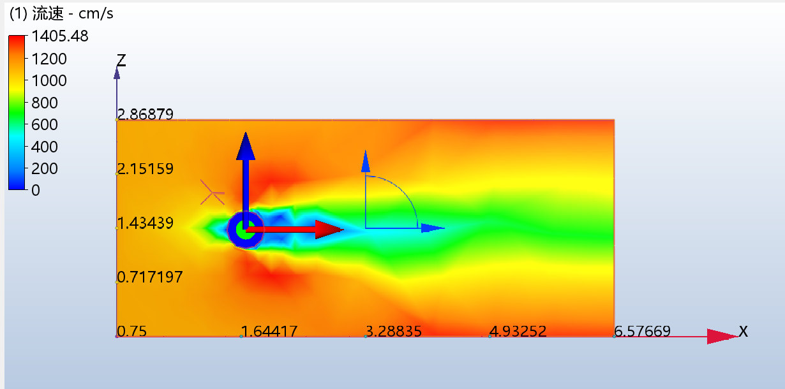
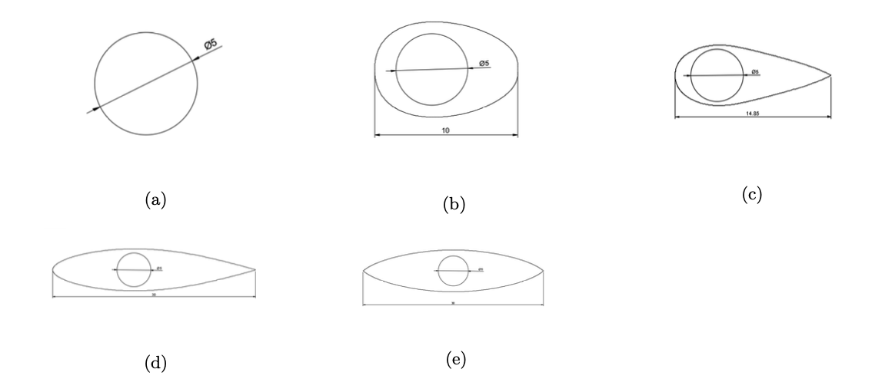
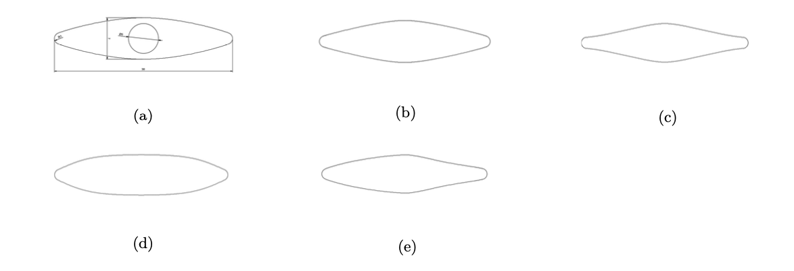
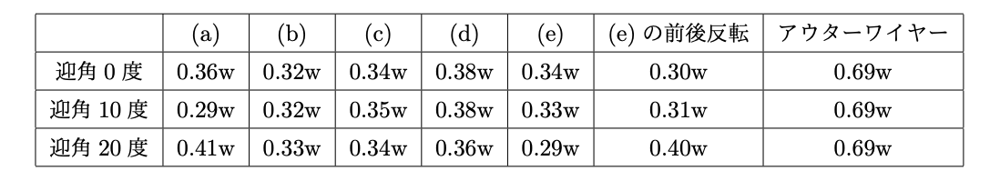
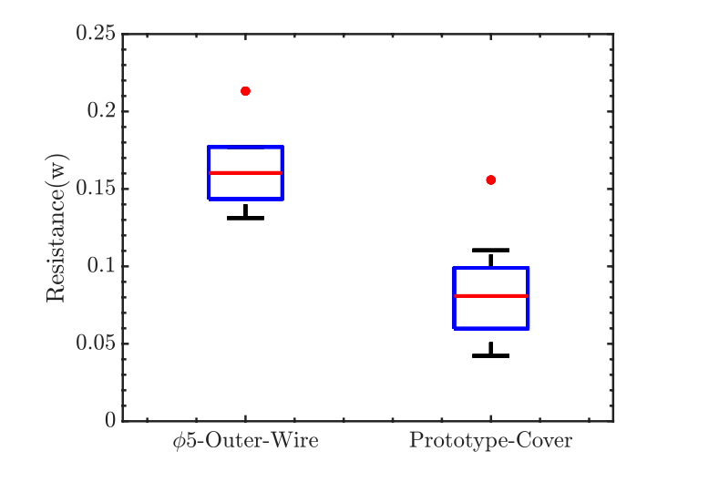
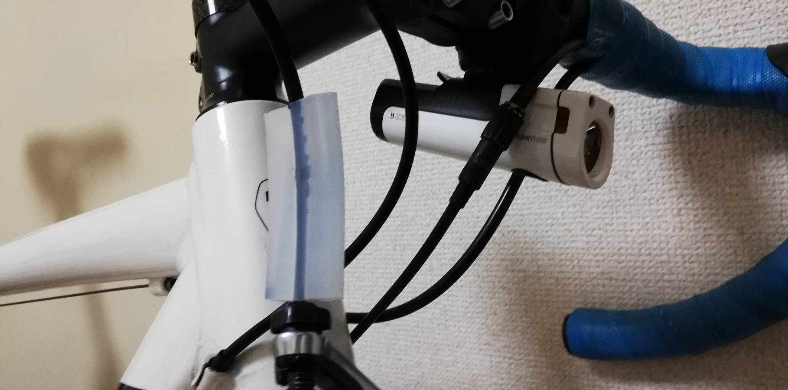

プロジェクトの目標
ロードバイクの最大の抵抗は空気抵抗である。 自転車ロードレースでは勝敗がタイヤの幅ほどの差で決まることも多く、いかに空気抵抗を削減するかが問題となってくる。 自転車のブレーキや変速機のワイヤーの断面は円形をしており、カルマン渦を発生させ非常に大きな空気抵抗を生む。 そこでワイヤーに流線型なカバーを被せることで空気抵抗を削減することが本プロジェクトの目的である。
成果
シミュレーションにはAutodesk社のCFDを用いた。円筒の抵抗係数は文献（H.Schlichting;Boundary Layer Theory) より実験値が明らかであり、それに最も近くなる計算モデルを採用した。 RANSでよく用いられる\(k-\omega \)モデルは壁近傍での剥離の予測が悪いという欠点があるため、壁近傍の計算の得意な\(k-\omega\)モデルと壁遠方の計算の得意な\(k-\epsilon\)モデルのハイブリッドであるSST\(k-\omega\)モデルを採用した 自転車での実走行時は迎角が±20°であることがホイールメーカーのFLOにより明らかにされていたため、迎角を0°、10°、20°と変化させてシミュレーションを行った。
上図の(a)〜(e)の内、レンズ型である(e)の空気抵抗が最も小さかった。これは過去の研究よりも明らかであった。 よって(e)型をモデルにしつつ、新たに下図の5種類の断面でシミュレーションを行った。
結果は以下の通りである。
この結果から、中央部分の盛り上がりは大きな迎角(20°)に対しても空気抵抗削減効果があり、正面からの空気抵抗削減効果もあることがわかった。 しかしながら実際の走行時では風は迎角10°は収まることが多く、そのような小さな迎角においては形状(a)が最も優れている。 (e)の前後反転モデルも小さな迎角において非常に大きな空気抵抗削減効果を発揮しているが、実際の取り付け時には正しく前後を合わせる必要がある。 これらの各モデルの迎角に対する空気抵抗削減の傾向と試作品の製作における穴の工作精度、取り付け時の簡便さを考慮し、前後対象な形状である形状(a)を採用した。
カバーはシリコンを押し出し成形することで制作された。
カバーの性能を確かめるために、風洞を制作して実験を行った。
計測は風洞の最大風速である風速 8.2m/s で行われた。計測結果は以下の通りである。 箱ヒゲ図が実験結果であり、その上部にある赤い点は、同じ風速を用いて行われたシミュレーションの結果を示している。 シミュレーションで用いられた試作品のモデルは実際の形状を測定して再現されている。 結果を見ると、アウターワイヤーとそのカバーのどちらも、箱ヒゲ図とシミュレーション結果に同程度の差があることがわかる。 これは実験装置の可動部の摩擦によって引き起こされていると考えられる。 前述の通り、アウターワイヤーの空気抵抗のシミュレーション値は文献の実験値と一致しており、これに基づいて本実験結果の値を校正することが可能である。 アウターワイヤー単体の実験結果とシミュレーション値の差を考慮すると、試作品の実験結果はそのシミュレーションの値に近いことがわかる。 この結果から、アウターワイヤー単体の時と比べて、試作品は顕著に空気抵抗を削減していることがわかる。 金型を工夫することにより、より高精度の形状(a)を再現できれば、より空気抵抗を削減できだろう。
実際に取り付けた写真は以下の通りである。
